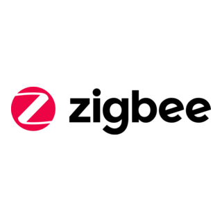
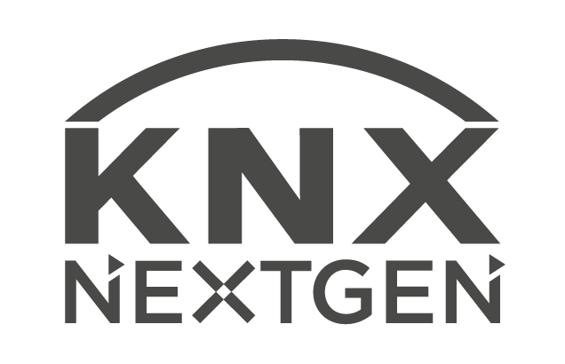
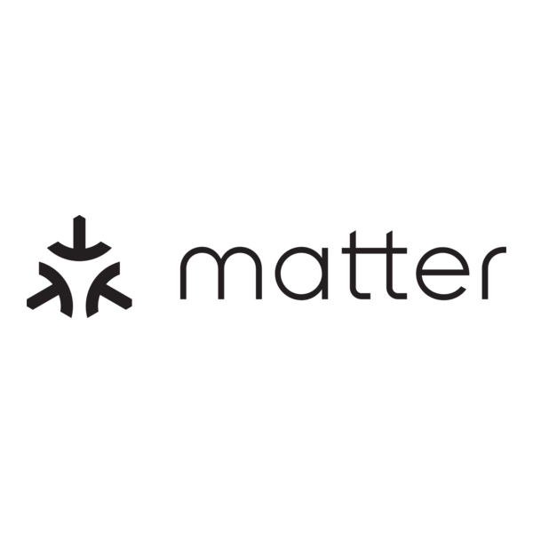

Guides • diagnostic • retour terrain
La domotique expliquée par le terrain.
Comprendre, choisir et installer une domotique simple, fiable et adaptée à votre logement grâce à des guides pratiques, des retours d'expérience et un assistant personnalisé.
Électricité & installation
Domotique
Énergie & chauffage
Sécurité
Automatisations
Réseau & protocoles
Écosystèmes & technologies
Comprendre ce qui peut réellement fonctionner ensemble
DomoRepère aborde les protocoles et plateformes qui structurent une installation connectée : ceux utilisés ou documentés régulièrement, mais aussi les alternatives pertinentes selon les projets.
Et aussi : Z-Wave, EnOcean et d'autres solutions représentent de vraies possibilités. Même si je ne les utilise pas toutes au quotidien, elles feront progressivement l'objet de guides et de contenus dédiés.

ZigbeeHAHome Assistant

KNX
MatterTaHTaHoma / Somfy
AqAqara & autres
Diagnostic DomoRepère
Quel projet domotique vous correspond ?
En 2 à 3 minutes, DomoRepère analyse votre logement, vos objectifs, votre niveau, votre matériel existant et vos contraintes. Vous pouvez sélectionner jusqu'à 5 objectifs.
Le résultat est une orientation personnalisée : DomoRepère privilégie la compatibilité et l'existant avant de proposer du nouveau matériel.
Transparence : les recommandations DomoRepère sont basées sur vos réponses. Certains liens de matériel peuvent être affiliés. Une commission peut être versée à DomoRepère sans surcoût pour vous.
Pourquoi DomoRepère ?
Des conseils pensés pour être utiles sur le terrain
Expérience terrain
Des conseils nourris par des installations et problématiques concrètes.
Compatibilité avant achat
Comprendre ce qui fonctionne ensemble avant de dépenser.
Sécurité
Ne jamais sacrifier les bonnes pratiques électriques à la facilité.
Pédagogie
Expliquer pourquoi une solution est adaptée, pas seulement donner une référence.
À lire maintenant
Voir tous les guides →Guides pratiques DomoRepère
Des bases claires pour préparer, comprendre et sécuriser votre projet.
Du besoin au matériel compatible
DomoRepère privilégie d'abord le diagnostic et la compatibilité. Lorsque du matériel est pertinent, les liens partenaires permettent ensuite de retrouver des équipements adaptés.
Le Lab DomoRepère
Des solutions testées sur une installation réelle
Home Assistant, Zigbee, Aqara, TaHoma, AirSend… DomoRepère s'appuie aussi sur une installation réelle et un environnement de test pour confronter la théorie au terrain.
Découvrir le Lab →Quelques mots derrière DomoRepère…
Une approche née du terrain
Technicien en bâtiment connecté & électricien
Ancien militaire et marin-pêcheur, c'est par passion et en autodidacte que j'ai découvert l'univers de la domotique il y a six ans, avant d'en faire mon métier en passant un diplôme de Technicien du Bâtiment Connecté. J'ai également suivi une formation KNX, afin d'élargir ma compréhension des architectures de bâtiment connecté.
Au quotidien sur le terrain, j'interviens en électricité générale, bornes de recharge IRVE, panneaux solaires, courants faibles, alarmes, vidéoprotection, automatismes de portails et sécurisation de sites éoliens.
Chez moi, mon installation tourne au cœur d'un système Home Assistant couplé à des passerelles comme Aqara, TaHoma ou AirSend. Pas de théories abstraites ici : à travers DomoRepère, je mets cette expérience du terrain au service d'une maison connectée simple, fiable, utile et sans erreurs.
Comprendre avant d'acheter, vérifier avant d'installer.
Découvrir mon installation →
Une question ou une suggestion ?
Vous pouvez me contacter directement via ce formulaire. Pour une question technique, décrivez autant que possible votre installation, le matériel concerné et le résultat recherché.